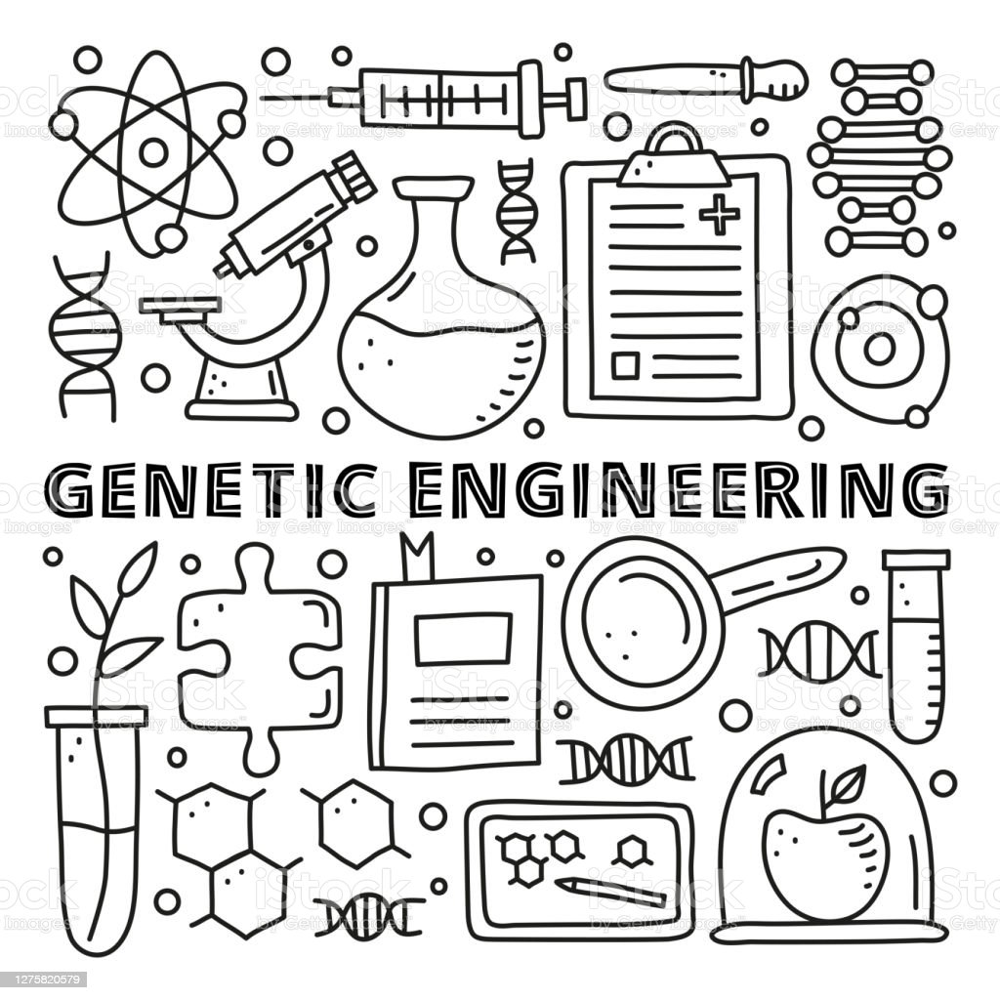

Genetik Mühendislik
Genetik mühendislik, çağımızın en heyecan verici ve dönüştürücü bilim dallarından biridir. Bu alanda gerçekleştirilen çalışmalar, canlı organizmaların genetik yapısında köklü değişiklikler yapma potansiyeli taşır. Bu süreç, genetik materyalin manipülasyonunu içerir ve canlıların özelliklerini geliştirmek, sağlık sorunlarını çözmek veya doğayı korumak gibi birçok farklı amaca hizmet eder.
Genetik mühendislik, insan sağlığı alanında büyük bir umut kaynağıdır. Örneğin, gen tedavisi adı verilen bir yöntemle genetik hastalıkların tedavisi mümkün hale gelmektedir. Bu tedavi şekli, hatalı veya eksik genleri düzelterek sağlıklı genlerin yerine konmasını amaçlar. Böylece, hastaların genetik temeli üzerinde köklü bir iyileşme sağlanır ve hastalıkların ilerlemesi durdurulabilir. Gen tedavisi, özellikle nadir görülen genetik hastalıkların tedavisinde umut verici bir yol açmaktadır.
Ayrıca, genetik mühendislik ilaç endüstrisinde de devrim yaratmaktadır. Geleneksel ilaç üretimi genellikle kimyasal sentez yoluyla gerçekleştirilirken, genetik mühendislik sayesinde artık ilaçların biyolojik üretimi mümkün hale gelmektedir. Örneğin, bakteriler veya bitkiler üzerinde yapılan genetik değişikliklerle, karmaşık moleküllerin üretimi hızlı ve verimli bir şekilde gerçekleştirilebilir. Bu da ilaçların daha hızlı ve daha ucuz bir şekilde üretilmesini sağlar, aynı zamanda tedaviye erişimi genişletir.
Tarım sektöründe genetik mühendislik, gıda üretimi açısından büyük potansiyel taşır. İnsan nüfusu sürekli artarken, tarımsal üretimin bu talebi karşılamak için yeterli olması önemlidir. Genetik mühendislik sayesinde bitkilerin genetik yapısı değiştirilerek, daha dayanıklı, verimli ve besleyici bitkiler elde edilebilir. Örneğin, genetik mühendislikle geliştirilen kuraklığa dayanıklı bitkiler, su kaynakları sınırlı bölgelerde tarımsal üretimi artırabilir ve açlıkla mücadeleye yardı